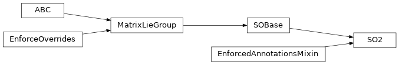

jaxlie._so2
Module Contents
Classes
Special orthogonal group for 2D rotations. |
- class jaxlie._so2.SO2(parameters)[source]
Bases:
jax_dataclasses.EnforcedAnnotationsMixin,jaxlie.SOBaseSpecial orthogonal group for 2D rotations.
Internal parameterization is
(cos, sin). Tangent parameterization is(omega,).- unit_complex :typing_extensions.Annotated[jax.numpy.ndarray, (Ellipsis, 2), jax.numpy.floating]
Internal parameters.
(cos, sin).
- static from_matrix(matrix)[source]
Get group member from matrix representation.
- Parameters
matrix – Matrix representaiton.
- Returns
Group member.
- apply(self, target)[source]
Applies group action to a point.
- Parameters
target – Point to transform.
- Returns
Transformed point.
- static exp(tangent)[source]
Computes
expm(wedge(tangent)).- Parameters
tangent – Tangent vector to take the exponential of.
- Returns
Output.
- log(self)[source]
Computes
vee(logm(transformation matrix)).- Returns
Output. Shape should be
(tangent_dim,).
- adjoint(self)[source]
Computes the adjoint, which transforms tangent vectors between tangent spaces.
More precisely, for a transform
GroupType:GroupType @ exp(omega) = exp(Adj_T @ omega) @ GroupType
In robotics, typically used for transforming twists, wrenches, and Jacobians across different reference frames.
- Returns
Output. Shape should be
(tangent_dim, tangent_dim).